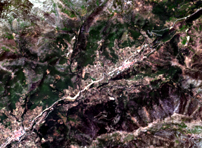

As you can see, the image has now changed. For Landsat 8, the 432 combination is called Natural Colors, because it uses bands from the visible part of the light's spectrum.

In the next steps we will change the bands' combination again.